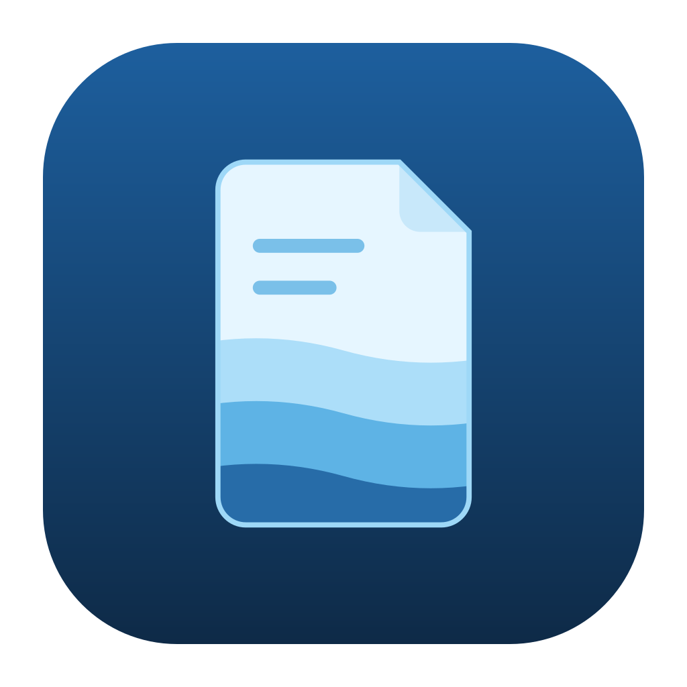

Phrasal verbs da semana
- look up: procurar (no dicionário)
- figure out: entender, descobrir
- [ ] revisar na sexta

NoteseaNotesea é um app de anotações leve. Capture em segundos e escreva em Markdown, com as notas salvas como arquivos no seu computador.
BaixarUm atalho global abre a captura de qualquer lugar. Escreveu, salvou.
Cada nota é um arquivo .md numa pasta sua. Sem conta,
sem nuvem.
Interface limpa com tema de aquário, feita para escrever sem distração.